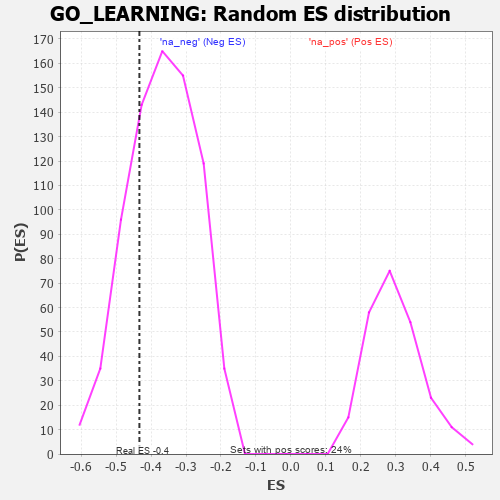

| | | Dataset | 7d |
| Phenotype | NoPhenotypeAvailable |
| Upregulated in class | na_neg |
| GeneSet | GO_LEARNING |
| Enrichment Score (ES) | -0.43340564 |
| Normalized Enrichment Score (NES) | -1.1813933 |
| Nominal p-value | 0.26842105 |
| FDR q-value | 0.65474576 |
| FWER p-Value | 1.0 |
Table: GSEA Results Summary
 Fig 1: Enrichment plot: GO_LEARNING
Fig 1: Enrichment plot: GO_LEARNING
Profile of the Running ES Score & Positions of GeneSet Members on the Rank Ordered List
| PROBE | GENE SYMBOL | GENE_TITLE | RANK IN GENE LIST | RANK METRIC SCORE | RUNNING ES | CORE ENRICHMENT | | 1 | SRF | | | 542 | 0.615 | -0.0277 | No |
| 2 | PDE1B | | | 929 | 0.500 | -0.0433 | No |
| 3 | DDHD2 | | | 1557 | 0.381 | -0.0971 | No |
| 4 | CIC | | | 1988 | 0.307 | -0.1310 | No |
| 5 | MEIS2 | | | 2063 | 0.296 | -0.1208 | No |
| 6 | UBA6 | | | 2114 | 0.289 | -0.1080 | No |
| 7 | CREB1 | | | 2243 | 0.269 | -0.1064 | No |
| 8 | RIC8A | | | 2833 | 0.179 | -0.1688 | No |
| 9 | GMFB | | | 3381 | 0.091 | -0.2317 | No |
| 10 | CDK5 | | | 3480 | 0.080 | -0.2387 | No |
| 11 | NF1 | | | 3713 | 0.040 | -0.2653 | No |
| 12 | SYT11 | | | 3732 | 0.036 | -0.2651 | No |
| 13 | MTOR | | | 4114 | -0.025 | -0.3115 | No |
| 14 | SYNJ1 | | | 4173 | -0.038 | -0.3163 | No |
| 15 | ARF4 | | | 4383 | -0.073 | -0.3378 | No |
| 16 | JPH3 | | | 4481 | -0.091 | -0.3440 | No |
| 17 | NPTN | | | 4519 | -0.098 | -0.3422 | No |
| 18 | NTRK2 | | | 4543 | -0.104 | -0.3382 | No |
| 19 | DRD2 | | | 5088 | -0.221 | -0.3921 | No |
| 20 | GRIN1 | | | 5381 | -0.291 | -0.4097 | Yes |
| 21 | DLG4 | | | 5388 | -0.293 | -0.3911 | Yes |
| 22 | DGKI | | | 5725 | -0.384 | -0.4080 | Yes |
| 23 | TLR2 | | | 5761 | -0.395 | -0.3864 | Yes |
| 24 | PPT1 | | | 6038 | -0.485 | -0.3891 | Yes |
| 25 | RAG1 | | | 6176 | -0.530 | -0.3714 | Yes |
| 26 | INSR | | | 6204 | -0.538 | -0.3392 | Yes |
| 27 | CLN3 | | | 6580 | -0.699 | -0.3403 | Yes |
| 28 | CTNS | | | 7044 | -0.965 | -0.3350 | Yes |
| 29 | GRM5 | | | 7053 | -0.969 | -0.2720 | Yes |
| 30 | VDAC1 | | | 7512 | -1.409 | -0.2367 | Yes |
| 31 | ASIC1 | | | 7726 | -1.838 | -0.1423 | Yes |
| 32 | FYN | | | 7881 | -2.622 | 0.0113 | Yes |
Table: GSEA details [plain text format]

Fig 2: GO_LEARNING: Random ES distribution
Gene set null distribution of ES for GO_LEARNING